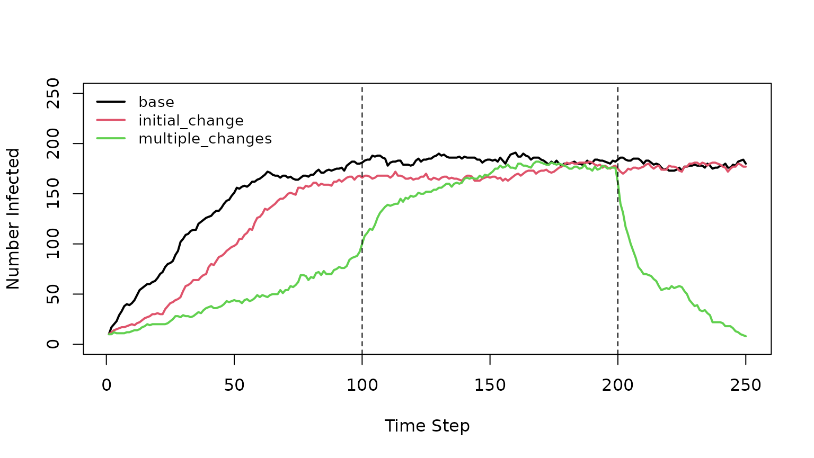
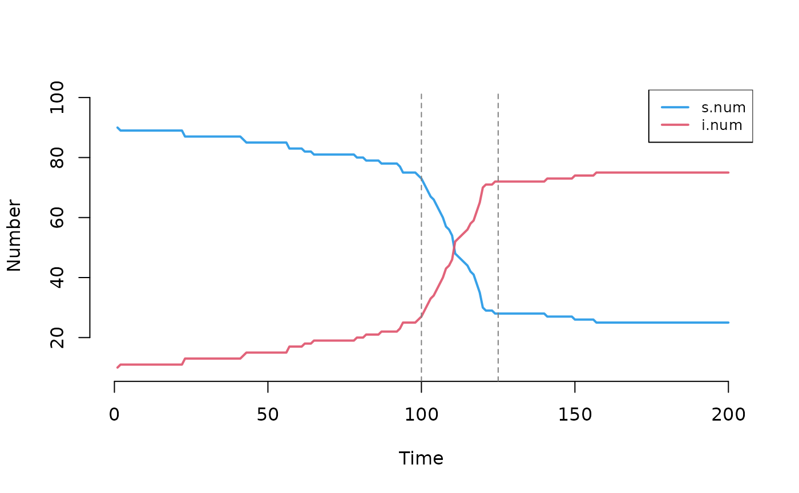

Working with Model Parameters in EpiModel
EpiModel v2.5.0
2024-09-04
Source:vignettes/model-parameters.Rmd
model-parameters.RmdIntroduction
In a model, parameters are the input variables used to define aspects of the system behavior. In the basic built-in SIS (Susceptible-Infected-Susceptible) model, these parameters could be the act rate, the infection probability and the recovery rate. In simple models, each of these parameters are single fixed values that do not change over the course of a simulation. In more complex models, we may want more flexibility in model parameterization.
Therefore, in this vignette, we demonstrate how to implement:
- Scenarios: sets of parameters to be changed for a simulation, either at the start or at a specific timestep.
- Random parameters: distributions of possible values rather than a single fixed value.
- Time-varying parameters and control settings: The scenarios functionality provides the most straightforward way to implement time-varying parameters, but more direct functionality is demonstrated here for advanced users seeking to implement time-varying parameters or control settings.
Scenarios
Scenarios can be defined as a single set of parameters to be used for a particular model run. For this example we will use a simple SIS model to demonstrate how scenarios work. First, we set up the model as we would normally.
set.seed(10)
nw <- network_initialize(n = 200)
est <- netest(nw,
formation = ~edges, target.stats = 60,
coef.diss = dissolution_coefs(~offset(edges), 10, 0),
verbose = FALSE
)
#> Starting maximum pseudolikelihood estimation (MPLE):
#> Obtaining the responsible dyads.
#> Evaluating the predictor and response matrix.
#> Maximizing the pseudolikelihood.
#> Finished MPLE.
param <- param.net(inf.prob = 0.9, rec.rate = 0.01, act.rate = 2)
init <- init.net(i.num = 10)
control <- control.net(type = "SIS", nsims = 1, nsteps = 250, verbose = FALSE)Scenario Definitions
To define the scenarios, we will make use of the
EpiModel::create_scenario_list function. It takes a
specially formatted data.frame as input and outputs a list
of scenarios usable by EpiModel.
We will use the tibble::tribble function to create the
data.frame here. But any data frame construction methods
will work as long as the resulting data.frame is properly
formatted.
suppressMessages(library(dplyr))
scenarios.df <- tribble(
~.scenario.id, ~.at, ~inf.prob, ~rec.rate,
"base", 0, 0.9, 0.01,
"initial_change", 0, 0.2, 0.01,
"multiple_changes", 0, 0.1, 0.04,
"multiple_changes", 100, 0.9, 0.01,
"multiple_changes", 200, 0.1, 0.1
)
knitr::kable(scenarios.df)| .scenario.id | .at | inf.prob | rec.rate |
|---|---|---|---|
| base | 0 | 0.9 | 0.01 |
| initial_change | 0 | 0.2 | 0.01 |
| multiple_changes | 0 | 0.1 | 0.04 |
| multiple_changes | 100 | 0.9 | 0.01 |
| multiple_changes | 200 | 0.1 | 0.10 |
A data.frame of scenarios must be formatted as follows.
First, there are two required columns: - .scenario.id: an
identifier for the scenario - .at: when should the changes
apply during the simulation
Any number of parameters columns. They must start with a letter and
contain only letters, numbers or .. Underscores
_ are not accepted. If a cell is left empty
(NA), EpiModel will assume that you want to set the
parameter to NA. NA does not mean that the
value should remain unmodified.
In the data.frame above, three rows share the same
.scenario.id. This means that EpiModel will consider it a
single scenario were multiple events occur during the simulation.
To go from the scenarios.df to a list of usable
scenarios we run:
scenarios.list <- create_scenario_list(scenarios.df)
str(scenarios.list, max.level = 2)
#> List of 3
#> $ base :List of 2
#> ..$ id : chr "base"
#> ..$ .param.updater.list:List of 1
#> $ initial_change :List of 2
#> ..$ id : chr "initial_change"
#> ..$ .param.updater.list:List of 1
#> $ multiple_changes:List of 2
#> ..$ id : chr "multiple_changes"
#> ..$ .param.updater.list:List of 3We now have a named list of scenarios. We will run all the scenarios,
combine there results and plot the number of susceptible and infected
over time to show what happened. To do so, we loop over all 3 scenarios
and use EpiModel::use_scenario function to create a new
sc.param object to be used for the simulation
parameters.
# creation of a list that will hold the result of the simulations
d_list <- vector(mode = "list", length = length(scenarios.list))
names(d_list) <- names(scenarios.list)
for (scenario in scenarios.list) {
# the id of the scenario is stored into `scenario$id`
print(scenario$id)
sc.param <- use_scenario(param, scenario)
sim <- netsim(est, sc.param, init, control)
# conversion to `data.frame` and storage of the scenario name in it
d_sim <- as.data.frame(sim)
d_sim[["scenario"]] <- scenario$id
d_list[[scenario$id]] <- d_sim
}
#> [1] "base"
#> [1] "initial_change"
#> [1] "multiple_changes"
#>
#> A MESSAGE occured in module 'epimodel.internal' at step 100
#>
#>
#> At timestep = 100 the following parameters were modified:
#> 'inf.prob', 'rec.rate'
#>
#> A MESSAGE occured in module 'epimodel.internal' at step 200
#>
#>
#> At timestep = 200 the following parameters were modified:
#> 'inf.prob', 'rec.rate'We see that for the “multiple_changes” scenarios, we received two messages, at time step 100 and 200, telling us that some parameters were changed during the simulation. The other scenarios were silent as the changes occurred before the simulation began.
Now we can merge and plot the results:
plot(d_list$base$time, d_list$base$i.num,
type = "l", col = 1, lwd = 2, ylim = c(0, 250))
lines(d_list$initial_change$time, d_list$initial_change$i.num,
type = "l", col = 2, lwd = 2)
lines(d_list$multiple_changes$time, d_list$multiple_changes$i.num,
type = "l", col = 3, lwd = 2)
abline(v = c(100, 200), lty = 2)
legend("topleft", legend = names(d_list),
col = 1:3, lwd = 2, cex = 0.9, bty = "n")
We can see that in the initial_change scenario, the
epidemic speed is slower than in the base “scenario” as we have reduced
the infection probability in the former.
The “multiple_changes” scenario shows different but expected results: - at first the epidemic is very slow as the infection probability is low and the recovery rate is high. - then at step 100, we apply the same values as in the “base” scenario. Thus the epidemic trajectory increases. - then at step 200, we reduce the infection probability and increase the recovery rate, which results in a quick epidemic extinction.
These scenarios are simplified to demonstrate the scenario system. Our research paper implementing the idea of multiple time-varying parameter changes was published in the Journal of Infectious Disease. The code can be found here.
Scenarios with Parameter Vectors
In full-scale modeling projects, we often have vectors of parameters.
For example, we may have a parameter, hiv.test.rate, which
is a vector of length 3 containing the weekly probabilities of HIV
screening for Black, Hispanic or White persons, respectively.
For such parameters we can still use the scenarios approach described
above. But in this case, we must define a column for each element of the
modified parameter and end it with a numerical value for the order in
which it lies in the vector: for example, \_1,
\_2 and \_3 for the B, H, and W rates. Here is
what that looks like:
scenarios.df <- tribble(
~.scenario.id, ~.at, ~hiv.test.rate_1, ~hiv.test.rate_2, ~hiv.test.rate_3,
"base", 0, 0.001, 0.001, 0.001,
"initial_change", 0, 0.002, 0.001, 0.002,
"multiple_changes", 0, 0.002, 0.001, 0.002,
"multiple_changes", 100, 0.004, 0.001, 0.004,
"multiple_changes", 200, 0.008, 0.001, 0.008
)
knitr::kable(scenarios.df)| .scenario.id | .at | hiv.test.rate_1 | hiv.test.rate_2 | hiv.test.rate_3 |
|---|---|---|---|---|
| base | 0 | 0.001 | 0.001 | 0.001 |
| initial_change | 0 | 0.002 | 0.001 | 0.002 |
| multiple_changes | 0 | 0.002 | 0.001 | 0.002 |
| multiple_changes | 100 | 0.004 | 0.001 | 0.004 |
| multiple_changes | 200 | 0.008 | 0.001 | 0.008 |
One thing to note is that you must pass in the values for each
sub-parameter in the scenarios.df. For example, even if the
value of the HIV screening rate for Hispanic persons (the second value
in the vector) is not changing across any scenarios, it is still
necessary to define it as hiv.test.rate_2.
When working with a lot of parameters, it is recommended to store the
scenarios.df as CSV or Excel file so your parameters can be
easily shared and edited.
Parameters Input Via Table
Similar to the scenarios, the param.net function that
creates the param object for netsim allows for
inputting model parameters with a data.frame table. This allows a user
to pass in many parameters at once, or work with a spreadsheet to track
and update parameters before use in EpiModel.
The data.frame of parameters must be specifically
formatted such that the first 3 columns must be: 1. ‘param’: The name of
the parameter. If this is a non-scalar parameter (a vector of length
> 1), end the parameter name with the position on the vector (e.g.,
"p_1", "p_2", …). 2. ‘value’: the value for
the parameter (or the value of the parameter in the Nth position if
non-scalar). 3. ‘type’: a character string containing either
"numeric", "logical", or
"character" to define the parameter object class.
In addition to these 3 columns, the data.frame can
contain any number of other columns, such as details or
source columns to document parameter meta-data. However,
these extra columns will not be used by EpiModel.
In this example, we are inputting the parameters into a
data.frame via tribble. In practice,
parameters may be stored in an Excel file or CSV file and imported into
a data.frame using the usual read functions.
df_params <- tribble(
~param, ~value, ~type,
"hiv.test.rate_1", "0.003", "numeric",
"hiv.test.rate_2", "0.102", "numeric",
"hiv.test.rate_3", "0.492", "numeric",
"prep.require.lnt", "TRUE", "logical",
"group_1", "first", "character",
"group_2", "second", "character"
)
knitr::kable(df_params)| param | value | type |
|---|---|---|
| hiv.test.rate_1 | 0.003 | numeric |
| hiv.test.rate_2 | 0.102 | numeric |
| hiv.test.rate_3 | 0.492 | numeric |
| prep.require.lnt | TRUE | logical |
| group_1 | first | character |
| group_2 | second | character |
To use this table of parameters with param.net, pass in
the table of parameters via the data.frame.params argument
in param.net. Note that these parameters may also be
combined with named parameters outside of a table, for maximum
flexibility. In this example, we also pass in two extra parameters,
other.param and act.rate. Note that when the
param object is printed, all of the parameters are
processed as expected.
Random Parameters
We have demonstrated how to work with fixed and time-varying parameters above. One may also be interested in working with distributions of parameters that may follow some parametric or non-parametric form. For example, we may want to sample a range of values for the probability of infection given contact for each simulation of a model, instead of using a single value across all simulations.
The Model
EpiModel now includes functionality to input distributions of parameters for network models. We will demonstrate this with a simple SI model.
nw <- network_initialize(n = 50)
est <- netest(
nw, formation = ~edges,
target.stats = 25,
coef.diss = dissolution_coefs(~offset(edges), 10, 0),
verbose = FALSE
)
#> Starting maximum pseudolikelihood estimation (MPLE):
#> Obtaining the responsible dyads.
#> Evaluating the predictor and response matrix.
#> Maximizing the pseudolikelihood.
#> Finished MPLE.
param <- param.net(
inf.prob = 0.3,
act.rate = 0.5,
dummy.param = 4,
dummy.strat.param = c(0, 1)
)
init <- init.net(i.num = 10)
control <- control.net(type = "SI", nsims = 1, nsteps = 5, verbose = FALSE)
mod <- netsim(est, param, init, control)
mod
#> EpiModel Simulation
#> =======================
#> Model class: netsim
#>
#> Simulation Summary
#> -----------------------
#> Model type: SI
#> No. simulations: 1
#> No. time steps: 5
#> No. NW groups: 1
#>
#> Fixed Parameters
#> ---------------------------
#> inf.prob = 0.3
#> act.rate = 0.5
#> dummy.param = 4
#> dummy.strat.param = 0 1
#> groups = 1
#>
#> Model Output
#> -----------------------
#> Variables: s.num i.num num si.flow
#> Networks: sim1
#> Transmissions: sim1
#>
#> Formation Statistics
#> -----------------------
#> Target Sim Mean Pct Diff Sim SE Z Score SD(Sim Means) SD(Statistic)
#> edges 25 27.4 9.6 1.806 1.329 NA 4.037
#>
#>
#> Duration Statistics
#> -----------------------
#> Target Sim Mean Pct Diff Sim SE Z Score SD(Sim Means) SD(Statistic)
#> edges 10 9.898 -1.018 0.298 -0.341 NA 0.667
#>
#> Dissolution Statistics
#> -----------------------
#> Target Sim Mean Pct Diff Sim SE Z Score SD(Sim Means) SD(Statistic)
#> edges 0.1 0.133 33.109 0.019 1.747 NA 0.042In the parameter list, we define four parameters:
inf.prob, which will remain a single fixed value, but also
act.rate, dummy.param, and
dummy.strat.param, which here are fixed but will be defined
below as random. The dummy.strat.param parameter has two
elements; this vector approach may be used, for example, to stratify a
parameter by subpopulation (e.g., as we did for the race-stratified HIV
screening rate example above). The last line prints a summary of the
model object. We can see the value of the parameters under the “Fixed
Parameters” section. Note the additional groups parameter
defined automatically by EpiModel as part of the “SI” model
definition.
Adding Random Parameters
To allow our parameters to be drawn from a distribution of random
values, we use the random.params argument to
param.net. There are two ways of defining which parameters
are random, and the distribution of values for those random parameters
to draw randomly and how to draw them.
Generator Functions
The first option is to define a generator function for each parameter we want to declare as random.
my.randoms <- list(
act.rate = param_random(c(0.25, 0.5, 0.75)),
dummy.param = function() rbeta(1, 1, 2),
dummy.strat.param = function() {
c(rnorm(1, 0.05, 0.01),
rnorm(1, 0.15, 0.03))
}
)
param <- param.net(
inf.prob = 0.3,
random.params = my.randoms
)
param
#> Fixed Parameters
#> ---------------------------
#> inf.prob = 0.3
#>
#> Random Parameters
#> (Not drawn yet)
#> ---------------------------
#> act.rate = <function>
#> dummy.param = <function>
#> dummy.strat.param = <function>We kept the inf.prob parameter fixed at
0.3, and then defined a list object called
my.randoms containing 3 elements:
-
act.rateuses theparam_randomfunction factory defined by EpiModel (see?EpiModel::param_random). In this case, each simulation will sample one of the three defined values in the vector with equal probability. -
dummy.paramis a function with no argument that returns a random value from a beta distribution. -
dummy.strat.paramis a function with no argument that returns 2 values sampled from normal distributions, each with different means and standard deviations.
Each element is named after the parameter it will fill and MUST BE a
function taking no argument and outputting a vector of the right size
for the parameter: size 1 for act.rate and
dummy.param; size 2 for dummy.strat.param.
Note that when we print out the parameter list before running the model,
it includes the random parameter definitions as functions, as their
sampled values are not yet realized.
The rest of the model is then run as before, although we increase the simulation count to three to demonstrate the parameter stochasticity.
control <- control.net(type = "SI", nsims = 3, nsteps = 5, verbose = FALSE)
mod <- netsim(est, param, init, control)
mod
#> EpiModel Simulation
#> =======================
#> Model class: netsim
#>
#> Simulation Summary
#> -----------------------
#> Model type: SI
#> No. simulations: 3
#> No. time steps: 5
#> No. NW groups: 1
#>
#> Fixed Parameters
#> ---------------------------
#> inf.prob = 0.3
#> groups = 1
#>
#> Random Parameters
#> ---------------------------
#> act.rate = 0.75 0.75 0.5
#> dummy.param = 0.1028706 0.3061986 0.6808219
#> dummy.strat.param = <list>
#>
#> Model Output
#> -----------------------
#> Variables: s.num i.num num si.flow
#> Networks: sim1 ... sim3
#> Transmissions: sim1 ... sim3
#>
#> Formation Statistics
#> -----------------------
#> Target Sim Mean Pct Diff Sim SE Z Score SD(Sim Means) SD(Statistic)
#> edges 25 26.067 4.267 1.801 0.592 7.834 6.974
#>
#>
#> Duration Statistics
#> -----------------------
#> Target Sim Mean Pct Diff Sim SE Z Score SD(Sim Means) SD(Statistic)
#> edges 10 9.232 -7.676 0.577 -1.33 2.452 2.236
#>
#> Dissolution Statistics
#> -----------------------
#> Target Sim Mean Pct Diff Sim SE Z Score SD(Sim Means) SD(Statistic)
#> edges 0.1 0.098 -2.157 0.02 -0.105 0.029 0.079After running 3 simulations we can see that the inf.prob
is still displayed under the “Fixed Parameters” section. The other three
parameters are displayed under the “Random Parameters” section:
act.rate and dummy.param now have 3 values
associated with them, one per simulation. dummy.strat.param
have <list> as its value because each simulation has
a vector of size 2.
To more easily inspect the parameter values, we can use the
get_param_set function:
all.params <- get_param_set(mod)
all.params
#> sim inf.prob vital groups act.rate dummy.param dummy.strat.param_1
#> 1 1 0.3 FALSE 1 0.75 0.1028706 0.06053865
#> 2 2 0.3 FALSE 1 0.75 0.3061986 0.05340469
#> 3 3 0.3 FALSE 1 0.50 0.6808219 0.06476905
#> dummy.strat.param_2
#> 1 0.2141265
#> 2 0.1372369
#> 3 0.1315418These parameters can then be merged with the epidemic data, for easy analysis of the relationship between parameters and outputs:
epi <- as.data.frame(mod)
left_join(epi, all.params)
#> Joining with `by = join_by(sim)`
#> sim time s.num i.num num si.flow inf.prob vital groups act.rate dummy.param
#> 1 1 1 40 10 50 NA 0.3 FALSE 1 0.75 0.1028706
#> 2 1 2 37 13 50 3 0.3 FALSE 1 0.75 0.1028706
#> 3 1 3 36 14 50 1 0.3 FALSE 1 0.75 0.1028706
#> 4 1 4 36 14 50 0 0.3 FALSE 1 0.75 0.1028706
#> 5 1 5 32 18 50 4 0.3 FALSE 1 0.75 0.1028706
#> 6 2 1 40 10 50 NA 0.3 FALSE 1 0.75 0.3061986
#> 7 2 2 38 12 50 2 0.3 FALSE 1 0.75 0.3061986
#> 8 2 3 38 12 50 0 0.3 FALSE 1 0.75 0.3061986
#> 9 2 4 37 13 50 1 0.3 FALSE 1 0.75 0.3061986
#> 10 2 5 37 13 50 0 0.3 FALSE 1 0.75 0.3061986
#> 11 3 1 40 10 50 NA 0.3 FALSE 1 0.50 0.6808219
#> 12 3 2 38 12 50 2 0.3 FALSE 1 0.50 0.6808219
#> 13 3 3 36 14 50 2 0.3 FALSE 1 0.50 0.6808219
#> 14 3 4 35 15 50 1 0.3 FALSE 1 0.50 0.6808219
#> 15 3 5 34 16 50 1 0.3 FALSE 1 0.50 0.6808219
#> dummy.strat.param_1 dummy.strat.param_2
#> 1 0.06053865 0.2141265
#> 2 0.06053865 0.2141265
#> 3 0.06053865 0.2141265
#> 4 0.06053865 0.2141265
#> 5 0.06053865 0.2141265
#> 6 0.05340469 0.1372369
#> 7 0.05340469 0.1372369
#> 8 0.05340469 0.1372369
#> 9 0.05340469 0.1372369
#> 10 0.05340469 0.1372369
#> 11 0.06476905 0.1315418
#> 12 0.06476905 0.1315418
#> 13 0.06476905 0.1315418
#> 14 0.06476905 0.1315418
#> 15 0.06476905 0.1315418Parameter Sets
The drawback of generator function approach above is that it cannot
produce correlated parameter sets. For instance, we may want
dummy.param and dummy.strat.param to be
related to one another within a single simulation. We might also use an
external method for generating parameter sets, such as Latin hypercube
sampling of multiple parameters.
For this, we need to pre-define a data.frame of
parameter values. In this example, we have five parameter sets:
n <- 5
related.param <- data.frame(
dummy.param = rbeta(n, 1, 2)
)
related.param$dummy.strat.param_1 <- related.param$dummy.param + rnorm(n)
related.param$dummy.strat.param_2 <- related.param$dummy.param * 2 + rnorm(n)
related.param
#> dummy.param dummy.strat.param_1 dummy.strat.param_2
#> 1 0.4617801 0.01272452 1.39670169
#> 2 0.1466187 -0.18052249 -0.06651093
#> 3 0.2793416 0.25988325 -0.13010820
#> 4 0.2432117 -0.57827919 0.49723583
#> 5 0.1581942 2.33576271 1.86195969We now have a data.frame with 5 rows and 3 columns. Each
row contains a set of parameters values that will be used together in a
single simulation of the model. This way we keep the relationship
between each value.
The first column of the data.frame is named
dummy.param, similar to the name of the parameter. For
dummy.start.param we need two columns as the parameter
contains two values. To achieve this, we name the two columns
dummy.start.param_1 and dummy.strat.param_2.
The value after the underscore informs EpiModel how it
should combine these values into a vector (note that this uses the same
syntax as with stratified parameters within model scenarios described
above). This in turn means that the underscore symbol is not allowed in
proper parameter names.
Then we set up the rest of the parameters. related.param
is saved in the my.randoms list under the special reserved
name param.random.set.
my.randoms <- list(
act.rate = param_random(c(0.25, 0.5, 0.75)),
param.random.set = related.param
)
param <- param.net(
inf.prob = 0.3,
random.params = my.randoms
)
param
#> Fixed Parameters
#> ---------------------------
#> inf.prob = 0.3
#>
#> Random Parameters
#> (Not drawn yet)
#> ---------------------------
#> act.rate = <function>
#> param.random.set = <data.frame> ( dimensions: 5 3 )The inf.prob parameter remains fixed, the
act.rate parameter remains random with independent sample,
but now a set of the two remaining parameters is passed in as correlated
parameters with param.random_set.
control <- control.net(type = "SI", nsims = 3, nsteps = 5, verbose = FALSE)
mod <- netsim(est, param, init, control)
mod
#> EpiModel Simulation
#> =======================
#> Model class: netsim
#>
#> Simulation Summary
#> -----------------------
#> Model type: SI
#> No. simulations: 3
#> No. time steps: 5
#> No. NW groups: 1
#>
#> Fixed Parameters
#> ---------------------------
#> inf.prob = 0.3
#> groups = 1
#>
#> Random Parameters
#> ---------------------------
#> dummy.param = 0.4617801 0.1581942 0.2793416
#> dummy.strat.param = <list>
#> act.rate = 0.25 0.25 0.5
#>
#> Model Output
#> -----------------------
#> Variables: s.num i.num num si.flow
#> Networks: sim1 ... sim3
#> Transmissions: sim1 ... sim3
#>
#> Formation Statistics
#> -----------------------
#> Target Sim Mean Pct Diff Sim SE Z Score SD(Sim Means) SD(Statistic)
#> edges 25 25.533 2.133 0.689 0.774 2.309 2.669
#>
#>
#> Duration Statistics
#> -----------------------
#> Target Sim Mean Pct Diff Sim SE Z Score SD(Sim Means) SD(Statistic)
#> edges 10 10.376 3.763 0.677 0.556 3.024 2.622
#>
#> Dissolution Statistics
#> -----------------------
#> Target Sim Mean Pct Diff Sim SE Z Score SD(Sim Means) SD(Statistic)
#> edges 0.1 0.106 6.142 0.009 0.668 0.005 0.047The output is similar to what we saw with the generator functions defined above. See that the correlated parameter sets are sampled from together from the data frame of parameters.
related.param
#> dummy.param dummy.strat.param_1 dummy.strat.param_2
#> 1 0.4617801 0.01272452 1.39670169
#> 2 0.1466187 -0.18052249 -0.06651093
#> 3 0.2793416 0.25988325 -0.13010820
#> 4 0.2432117 -0.57827919 0.49723583
#> 5 0.1581942 2.33576271 1.86195969
get_param_set(mod)
#> sim inf.prob vital groups dummy.param dummy.strat.param_1 dummy.strat.param_2
#> 1 1 0.3 FALSE 1 0.4617801 0.01272452 1.3967017
#> 2 2 0.3 FALSE 1 0.1581942 2.33576271 1.8619597
#> 3 3 0.3 FALSE 1 0.2793416 0.25988325 -0.1301082
#> act.rate
#> 1 0.25
#> 2 0.25
#> 3 0.50Time-Varying Parameters and Control Settings (Advanced)
Within EpiModel, the scenarios described above uses an updater module to implement parameter changes at a given time step. This section describes how these mechanisms function and how to use them directly if the scenarios approach above is not flexible enough, or if you would also like to have time-varying control settings.
Parameter Updaters
To define what parameters should change and when during the
simulation, we need to define updater lists. An updater is a
list with two named elements: at, the time
step when the change will take place, and param a named
list of parameters to update. For example:
list(
at = 10,
param = list(
inf.prob = 0.3,
act.rate = 0.5
)
)
#> $at
#> [1] 10
#>
#> $param
#> $param$inf.prob
#> [1] 0.3
#>
#> $param$act.rate
#> [1] 0.5This defines an updater that will change the value of the
inf.prob parameter to 0.3 and the value to the
act.rate parameter to 0.5. This change will
happen at time step 10. If we want, multiple parameter changes, then we
can write a list of updaters:
# Create a `list.of.updaters`
list.of.updaters <- list(
# this is one updater
list(
at = 100,
param = list(
inf.prob = 0.3,
act.rate = 0.3
)
),
# this is another updater
list(
at = 125,
param = list(
inf.prob = 0.01
)
)
)In this example, we define two updaters, one that
occurs at time step 100 and the other one at time step 125. As
demonstrated below, these values for inf.prob and
act.rate will change from the values of 0.1
established by param.netat the beginning of the time
series.
Incorporating Updaters
Below we set up a complete example with a closed population SI model
using the parameters and updaters defined above. Note that the parameter
updaters get passed into param.net with the special
.param.updater.list argument.
param <- param.net(
inf.prob = 0.1,
act.rate = 0.1,
.param.updater.list = list.of.updaters
)
init <- init.net(i.num = 10)
control <- control.net(
type = "SI",
nsims = 1,
nsteps = 200,
verbose = FALSE
)Next, we run the model with a simple network structure:
nw <- network_initialize(n = 100)
est <- netest(
nw,
formation = ~edges,
target.stats = 50,
coef.diss = dissolution_coefs(~offset(edges), 10, 0),
verbose = FALSE
)
#> Starting maximum pseudolikelihood estimation (MPLE):
#> Obtaining the responsible dyads.
#> Evaluating the predictor and response matrix.
#> Maximizing the pseudolikelihood.
#> Finished MPLE.
mod <- netsim(est, param, init, control)
#>
#> A MESSAGE occured in module 'epimodel.internal' at step 100
#>
#>
#> At timestep = 100 the following parameters were modified:
#> 'inf.prob', 'act.rate'
#>
#> A MESSAGE occured in module 'epimodel.internal' at step 125
#>
#>
#> At timestep = 125 the following parameters were modified:
#> 'inf.prob'The model plot here demonstrates the inflection points in the epidemic trajectory at the two parameter change points defined above.

Verbosity
When creating a parameter updater, one can add an optional
verbose element to the list. If
TRUE, EpiModel will output a message` describing what
changes were performed and when they occurred.
Relative Parameter Changes
It may be useful to configure the changes with respect to the current
value instead of a fixed new value. This is possible as demonstrated
below for inf.prob.
list(
at = 10,
param = list(
inf.prob = function(x) plogis(qlogis(x) + log(2)),
act.rate = 0.5
)
)
#> $at
#> [1] 10
#>
#> $param
#> $param$inf.prob
#> function(x) plogis(qlogis(x) + log(2))
#>
#> $param$act.rate
#> [1] 0.5This updater will set the value of act.rate to
0.5 as before. But, for inf.prob we define a
function (not a function call). In this case, the will apply the
function to the current value of act.rate. If
we consider as in the previous example that act.rate is set
to 0.1 by param.net, then its new value will
be obtained by adding the log odds of 2 to the original value of
inf.prob: plogis(qlogis(0.1) + log(2)):
0.1818182. Whereas the previous value of
inf.prob was 0.10, the updated value will be 0.18.
Time-Varying Control Settings
Similar to time-varying parameters, we can use time-varying controls. These work in the same way. Each control updater is defined as a list of lists.
# Create a `list.of.updaters`
list.of.updaters <- list(
# this is one updater
list(
at = 100,
control = list(
resimulate.network = FALSE
)
),
# this is another updater
list(
at = 125,
control = list(
verbose = FALSE
)
)
)This example sets two control updaters, one that turns off network resimulation at timestep 100 and another toggling of the model verbosity at step 125.
The list.of.updaters then gets passed into
control.net through the special
.control.updater.list argument.
control <- control.net(
type = "SI",
nsims = 1,
nsteps = 200,
verbose = TRUE,
.control.updater.list = list.of.updaters
)